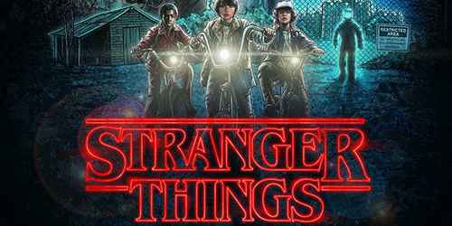

Stranger Things
Uma declaração de amor aos clássicos sobrenaturais dos anos 80, Stranger Things é a história de um menino que desaparece sem deixar vestígios. Ao procurar por respostas, a família, os amigos e a polícia gradulamente mergulham num mistério envolvendo experimentos ultrassecretos do governo, forças sobrenaturais e uma estranha garotinha.
O primeiro episódio foi lançado em 15 de Julho de 2016, e a série está na sua segunda temporada.
Elenco
- Winona Ryder como Joyce Byers
- David Harbour como Jim Hopper
- Finn Wolfhard como Mike Wheeler
- Millie Bobby Brown como Jane "Eleven" Ives
- Gaten Matarazzo como Dustin Henderson
- Caleb McLaughlin como Lucas Sinclair
- Natalia Dyer como Nancy Wheeler
- Charlie Heaton como Jonathan Byers
- Cara Buono como Karen Wheeler
- Matthew Modine como Dr. Martin Brenner
- Noah Schnapp como Will Byers
- Shannon Purser como Barbara
- Joe Keery como Steve Harrington
- Joe Chrest como Ted Wheeler
- Rob Morgan (IV) como Officer Powell
- Aimee Mullins como Terry Ives
- Ross Partridge como Lonnie Byers
- Brett Gelman como Murray Bauman